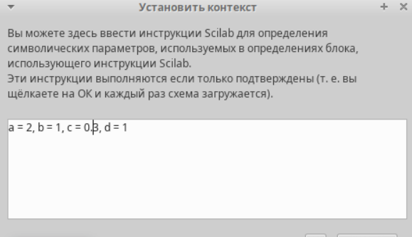
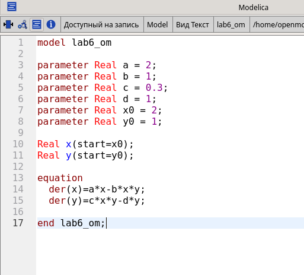

В этой модели x – число
жертв, y - число хищников.
Коэффициент a описывает
скорость естественного прироста числа жертв в отсутствие хищников, d - естественное вымирание хищников,
лишенных пищи в виде жертв. Каждый акт взаимодействия уменьшает
популяцию жертв, но способствует увеличению популяции хищников (члены
− bxy и
cxy в правой
части уравнения).
Реализация модели в xcos

Задать переменные окружения в
xcos
Реализация модели в xcos
Модель хищник-жертва в xcos
Реализация модели в xcos
Задать начальное значение в блоке
интегрирования для x
Задать начальное значение в блоке
интегрирования для y
Реализация модели в xcos
Задать конечное время интегрирования в
xcos
Реализация модели в xcos
Решение модели хищник жертва при a = 2, b = 1, c = 0.3, d = 1, x(0) = 2, y(9) = 1
Фазовый портрет модели хищник жертва при
a = 2, b = 1, c = 0.3, d = 1, x(0) = 2, y(9) = 1
Реализация
модели с помощью блока Modelica в xcos
Модель хищник-жертва в xcos с применением
блока Modelica
Реализация
модели с помощью блока Modelica в xcos
Ввод значений входных параметров блока
Modelica для модели
Ввод функции блока Modelica для
модели
Реализация модели в
OpenModelica

Модель в OpenModelica
Реализация модели в
OpenModelica
Параметры моделирования в
OpenModelica
Реализация модели в
OpenModelica
Решение модели хищник жертва при a = 2, b = 1, c = 0.3, d = 1, x(0) = 2, y(9) = 1. OpenModelica
Фазовый портрет модели хищник жертва при
a = 2, b = 1, c = 0.3, d = 1, x(0) = 2, $y(9) = 1.
OpenModelica
Заключение
В результате выполнения работы была исследована модель хищник-жертва
при помощи xcos и OpenModelica.